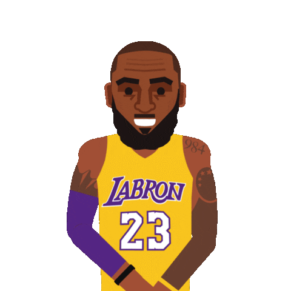

Mon CV

Contact
79 Rue Loubon13003 Marseille
07 69 36 49 98
mohamed.djambe18@gmail.com 
Compétences
- Administrateur Réseau : Active directory, Firewall, Vlan
- Système : Windows XP/7/8/10, Linux
- Réseaux : Virtualisation, LAN, Wi-Fi
Expériences
Dec2020 - Avril 2020 : Proman Intérim Bouc Bel Air
Amazon Agent de triDébut Août 2019 - Fin Août 2019 : Proman Intérim Bouc Bel Air
Amazon Agent de triMars 2019 - Avril 2019 : RL Mobile
Stagiaire en Systèmes Electroniques NumériquesNov. 2018 - Déc. 2018 : CyberPhone Académie
Stagiaire en Systèmes Electroniques NumériquesMars 2018 - Avril 2018 : NAXXA
Stagiaire en Systèmes Electroniques NumériquesNov. 2017 - Déc. 2017 : Connectic
Stagiaire en Systèmes Electroniques NumériquesAvril 2017 - Mai 2017 : MOBIFIRST
Stagiaire en Systèmes Electroniques Numériques
Formations
- 2022: BTS SIO option SLAM
- 2019 : Baccalauréat Professionnel Systèmes Électroniques Numériques en Télécommunications Réseaux
Centre d'interet
J'adore pratiquement tout les sport surtout quand il faut se dépenser pour gagner(sauf la course, marathon ou quelque chose du genre)
Sport principal Basket-Ball : Niveau Régionnal